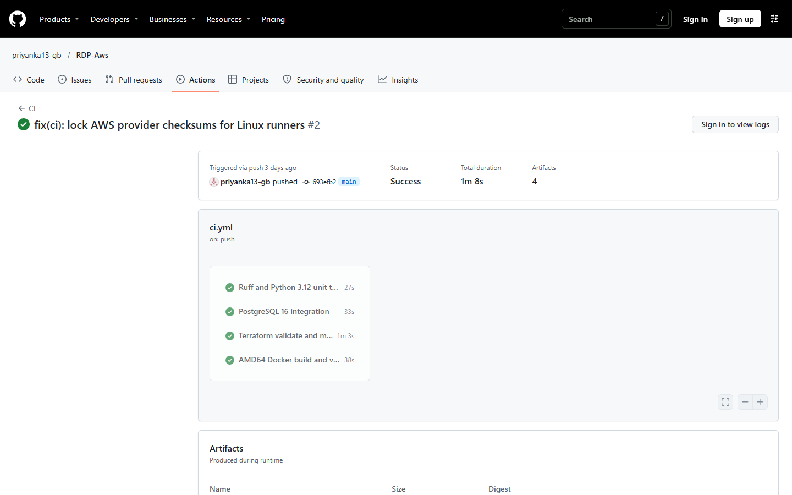

Infrastructure as code
Terraform manages VPC networking, IAM, ALB, ECS and CloudWatch. S3 holds remote state in separate roots.
CLOUD ENGINEERING · CASE STUDY
Containerized application delivery using Terraform, Docker, AWS and GitHub Actions.
An on-demand demonstration system. AWS application infrastructure is normally inactive.
01 / SYSTEM DESIGN
FastAPI runs in a hardened container. Terraform defines a cost-conscious AWS environment with an application load balancer and ECS Fargate, while separate state roots manage shared infrastructure.
Select an architecture component for details.
Terraform manages VPC networking, IAM, ALB, ECS and CloudWatch. S3 holds remote state in separate roots.
The runtime uses a digest-pinned Python 3.12 Alpine base and non-root UID 10001. The task port accepts ingress from the ALB security group.
The initial cost-saver environment avoids NAT gateways and RDS. A 256 CPU / 512 MiB task runs only during demonstrations; teardown removes the application stack while ECR and state remain.
02 / QUALITY GATES
GitHub Actions runs Ruff, unit tests, PostgreSQL integration, Terraform validation and mock tests, an AMD64 image build and Trivy. ECR publication is a separate manual operation; GitHub OIDC publishing is deferred.
03 / VERIFIED EVIDENCE
GitHub-hosted CI passed for commit 693efb2 in November 2026. Scan results change with dependencies and vulnerability databases. The ECR AMD64 image was scanned and verified separately.
These records describe specific historical checks and a short-lived demonstration. They are not live status indicators.

The recorded CI run includes 93 unit tests and two PostgreSQL integration tests.
Review CI test summary ↗Terraform validation and 23 mock-plan tests passed; infrastructure is described in modular architecture documentation.
Explore Terraform architecture ↗The dated CI scan reported zero Trivy findings. Results can change as vulnerability databases and images change.
Review scan summary ↗Immutable release git-9b18a3109aa2 and its AMD64 child digest were verified; the child scan had zero findings at the recorded time.
Review release verification ↗An on-demand deployment and teardown were audited from recorded evidence. Raw endpoint responses were not retained.
Read the deployment audit ↗Local failure scenarios were tested; live ECS rollback remains unverified.
Review monitoring and recovery ↗04 / OPERATIONS
Health and readiness endpoints, structured JSON logs and Prometheus request metrics. PostgreSQL readiness is optional.
CloudWatch logs, ECS task status and ALB target health provide observable signals. Manual monitoring collects bounded read-only snapshots.
Five local Docker failure scenarios were exercised. ECS deployment circuit breaker is configured; live AWS rollback remains unverified.
05 / TECHNOLOGY
AWS VPC, ALB, ECS Fargate, ECR, S3 and Terraform with separate state ownership.
Python 3.12, FastAPI, SQLAlchemy, psycopg and PostgreSQL 16 for local integration.
Docker, GitHub Actions, Ruff, pytest, Trivy, CloudWatch and Prometheus.
06 / ENGINEERING CHALLENGES
Runtime candidates were compared against recorded scan findings and compatibility tests before selecting Alpine. Findings are time-dependent.
Temporary CLI credentials and an isolated Docker config address a Windows credential-helper failure without storing permanent AWS access keys in the project.
Cross-platform Terraform lock checksums preserve validation. Cost-saver networking avoids NAT and RDS for the short-lived demonstration.